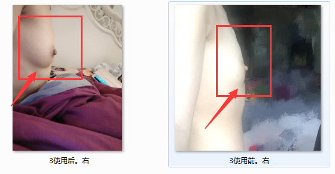
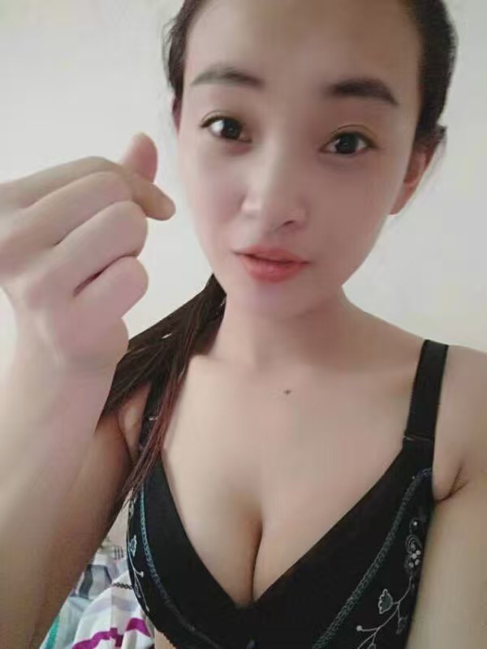

亲爱的，你也知道市面上的产品琳琅满目的，根本无法分辨真假与是否。所以想要成功增大，我们必须要先了解自身胸部不如意的真正原因，才能对症下药，彻底的改善好。才知道哪个适合自己，哪个不适合自己（下结论前客户问产品）
老师：你好，我是丰胸老师李小璐，你添加我的微信也是为了丰胸吗？我应该怎么称呼你呢？（愉快表情）
客人：微博
老师：你可以叫我小璐老师或小璐，怎么称呼你呢？（表情）
客户：七七
老师：由于每个姐妹的情况不同，同时，也是为了更好的帮到你，你先和我说下你的身高、年龄、体重以及目前的罩杯情况。
客户：20,166,100，A杯
老师：还在上学吗？结婚生小孩没？
老师：你的身材挺好的呢，苗条的。只是按照你的身材来看，A杯是很美中不足的呢
老师：胸部是一直这样吗？
产后的问题
（宝宝多大了？） 有喂母乳吗？）
（奶水充足吗？） （哺乳期多久呢？）
（自然断奶还是断奶针？） （产前罩杯多大呢？）
胸部穿上内衣有没有丽丽她的严重？
这是她在改善过程中的反馈，你可以对比一下
这是她改善后的反馈
老师：按照东方女性标准体形来说，你的身高、体重还是不错的，证明你在青春期营养是跟上了，但是你的胸部发育却只有A杯，这说明你在青春期乳房的营养是没有提供到位的，所以才没发育完善（选择性发）
这是我给你分析的，你看下能够懂吗？
这个情况同时也是一种健康隐患，因为乳腺导管长期的堵塞，后期很容易引发乳腺增生、小叶增生的一些乳腺疾病，严重的就是乳腺纤维瘤。当然现在还不是病，但是，你自身也要引起重视
现在是乳腺导管堵塞，营养补充不进去，那么想要改善，需要先疏通乳腺导管，再补充胸部营养，再把营养锁住，只有胸部里面存在营养，那乳腺导管才不会再次的堵塞，胸部才一辈子的完美，你自己知道乳腺导管的吗？
你胸部偏小的问题已经找到，想要增大，唯一的方法，只有先解决根源性的问题。第一步，先疏通你的乳腺导管，听说过乳腺导管吗？
恩恩，之前不懂没关系，那我现在给你解析一下，那就要懂了哦
乳腺导管有十五到二十根，是往胸部输送营养的通道，同时也是胸部的输乳管。你说如果通道都堵塞不通畅了，你每天提供再多的营养，胸部能不能吸收呢？就像吹气球一样，气球进气体的通道都没有找到或者是堵塞的，气吹不进去，那气球能吹大吗？对吧
我说的能够懂吗？
有过丰胸经历的：这也就是为什么你之前用了那些丰胸的产品都没有看到效果的原因。你想过没有，你的乳腺导管是堵塞的，再多的营养，再多的产品给你去用，那都吸收不了，那不等于浪费吗？！如果不是今天老师了解到你这些情况，你内心可能还一直认为自己以前买的是假的产品，是吧？ **，现在知道是怎么回事了吧？！
老师：也不用担心，你现在这种情况，首先，解决好乳腺导管堵塞的问题。导管疏通后，杜绝胸部乳腺隐患，同时能让乳房吸收到足够的营养，才能够得到彻底的增大，达到再次发育，呈现出你所期待的效果，圆润、饱满、坚挺，那个时候，穿任何衣服都有着深深的乳沟，穿什么都特别的有女人味，那个时候不管是男朋友还是自己都是很喜欢的~~
你和我说下自己理想的罩杯曲线，我按照你的情况给你制定针对你的改善方案。
效果图
你也可以的，因为你偏小的原因已经找到。这种情况通过一对一的方式，制定疏导方案，疏通乳腺导管补充营养后，不仅可以改善你胸部罩杯大小的问题，让胸部吸收营养后变得充盈、坚挺。甚至还杜绝了胸部健康方面的隐患。
稍等下，亲，我根据你胸部情况给你搭配产品。根据你的情况来帮你的。
这是根据你的情况给你搭配的产品，这是产品的图片。分三步改善，第一步，是彻底的疏通乳腺导管，那么在疏通乳腺导管的过程中，你会发现乳晕处有点痒痒热热的，并且乳晕乳头颜色会逐渐变淡，胸部里面的脏东西也会通过乳头流出，在这期间，胸部也会有增大，但是不明显。第二步，补充营养的阶段，这期间就是很明显的增大，基本每天都会有变化，你可以量好胸部围度，对比。第三步，锁住营养阶段，你会发现胸部会越来越有光泽，手感越来越好。
既然都清楚了，那每天抽10分钟的时间配合老师使用，让自己彻底做回真正性感、自信的女孩。不要再去羡慕别人，让别人来羡慕你哦~~
你的情况是乳腺导管堵塞， 营养补充不进去胸部，那么我这次帮你改善，从你根源处解决问题，先疏通乳腺导管，再补充胸部营养，再把营养锁住，达到胸部自然增大，一辈子的效果
分三个步骤。第一步，精华液：疏通乳腺导管；第二步，美乳霜：补充胸部营养；第三步：紧致胸膜：锁住胸部营养，保持弹性，坚挺。
这些是和你同一情况的姐妹，也是乳腺导管堵塞，这些是十天到二十天的反馈
按照你的情况，十五天到二十天会有明显的变化，你自己拍个胸部照片，到时候对比效果~
当你在后期配合过程中，你的胸部一天天在变化了，不穿内衣也能看到乳沟、躺下也能看到坚挺、饱满的效果，你自己都会爱不释手。那个时候，穿任何衣服都漂亮、自信有曲线感的时候，男朋友/爱人对你的态度会有很大转变而且更疼爱你哦~
收到之后我会给你建立个人档案，在你改善过程中，全程按照你的情况来帮你，你拍好胸部照片，到时候对比，我和你一起见证你的变化哦
用法的话到时你收到货后我会一对一指导你去使用，因为你没有收到货，所以这里也说不明白，我会每天指导你使用10分钟
针对你这种情况制定的方案，一个疗程2880，增大罩杯的同时，提升你整个胸部的曲线美感，坚挺、饱满、圆润，特别有手感。乳晕也会逐渐恢复粉嫩色，呈现出性感、诱人的效果~
精华油，彻底的疏通乳腺导管
精华液，补充足够的胸部营养
美乳霜，补充胸部营养的同时滋润胸部肌肤，锁住胸部营养
这是一些和你同一情况的姐妹在改善后的反馈，亲，你这次改善好好的配合我，不要偷懒哦，当你胸部在逐渐饱满的时候，当你自己或者爱人摸你的胸部手感更加好的时候，当你爱人更加迷恋你和胸部的时候，当你自己因为胸部而更加自信，更加有魅力的时候，可不能忘记我哦，到时候身边的姐妹们看到你的变化了，你一定要介绍过来，也帮助她们逃离胸小的苦海
通过这次针对性来解决，很快你也就可以和她们一样自信迷人。而且，改善好的不仅仅是你胸部的曲线美，同时也可以彻底的杜绝乳腺方面的健康隐患，因为你乳腺导管彻底疏通了啊！
我就不一一发给你了，因为太多太多，不好找。她们今天的变化是她们之前选择和坚持下来的结果。
其实最关键的是你这次通过针对性的周期改善，花这点钱能给你换来什么？对吧！你想过没有，由于胸部缺陷的美中不足，再漂亮的衣服给你穿都失去了女人味。拥有再漂亮的颜值，在真正毫无遮掩的情况下，面对自己爱人的那一刻，你是不自信的。在这现实又充满诱惑的当下，性感漂亮的曲线，对于自身及爱人而言，不仅仅是形象，更多的是影响你今后的感情及婚姻的基础。难道你觉得不值得吗？对吧！
图中小梅，是从A杯达到C满杯，之后介绍了闺蜜过来，现在增大之后，约定一起穿吊带裙去逛街，都是一条靓丽的风景，那这次你也是哦
这是张虹的反馈，以前呀总说老公出门和朋友玩不带她，后来她老公说，你也不瞧瞧你自己的样子，怎么敢带出去，不过现在胸部增大了之后，老公在家也都更加爱不释手，出门和朋友聚会也会带她去了，介绍的时候都很开心呢，他老公又一次说，很享受别人羡慕他的样子呢，这次你改善好胸部，也给老公一个惊喜了呢，胸部不仅是我们女人的标致，也是夫妻性生活第二性器官的。
这是丹丹的反馈，和你同一情况的，但是胸部比你的要严重，她之前找到我的时候，自己还说自己的胸部自己都不想看，但是经过我的帮助，现在胸部增大之后，不仅自己更加的自信了，老公都还更加的喜欢了，那这次你也是哦
丹丹的反馈，她的情况比你的还严重，也是在我这里改善好的，所以你也不例外，你的情况在我这里属于比较常见的，增大罩杯也是完全不成问题的，她自家还是开美容院的
未婚这个姐妹丹丹和你胸部偏小的原因是一样的，她自己家是开美容店的，经常用自己家精油按摩也没有什么效果，回到家他老公经常说她，她就通过她姐妹找到我呢，在我这经过两个月改善好的，上次还去国外买东西亲自送给我呢，现在也介绍闺蜜过来
学生这个姐妹君君和你胸部偏小是同一情况，不过她的经历比你要难过的多，她还有大小不一、外扩的现象，她在学校，身边的异性都嘲笑她是男人婆，她和老师说虽然她知道同学都是开玩笑，但是她自己心里也是很难受的。她就通过姐妹找到我，那时候还半信半疑，以为自己胸部是不会再增大了，这是她十天的反馈，效果已经很明显了，还非要带家里的特产给我[坏笑]
产后，下垂这个姐妹陈姐和你胸部的问题是同一情况，产后缩水，下垂。她的胸部比你严重的多。她自己看着都怕，我当时看到都吓一跳。她和我说老公还特别嫌弃她的胸部，男人就是不会管你是什么原因导致的，只会觉得你胸部看着就好可怕，所以女人就要懂得保养自己。她后来通过朋友找到我的时候还是半信半疑，以为自己的胸部没救了，通过针对性了解完她的情况，发现她的情况也只有我能帮助到她。这是她26天的反馈，很明显改善了很多，陈姐现在还是在改善期间呢。
我这里是一步到位的改变，你知道我为什么可以帮你增大吗，我和你再说一说吧，可能时间比较久，忘记了
第一，和你了解胸部情况，知道了你胸部偏小的原因，分析给你
第二，根据你胸部情况来给你搭配产品，从你根源处解决问题，根据你的情况来帮你，并不是随便给你使用产品
第三，根据你的胸部情况专门调整成分和浓度，最适合你，所以给你制定的，就只能你使用
第四，根据你胸部情况制定用法用量，在你改善过程中花时间和精力来帮你，不定时的根据你胸部的反应调整
我这里所有的细节，都不是固定的，都是根据你个人的胸部情况来帮你的，所以你能够增大。并且我也只帮助能够帮助的姐妹，所以这些年来，也都没有过丰胸失败的案例
稍后我也会给你建立档案，然后根据你胸部情况给你调整成分和浓度，大概一天左右发货，毕竟关系到效果问题，所以不能将就，一定要把一切都做到位，做到更好